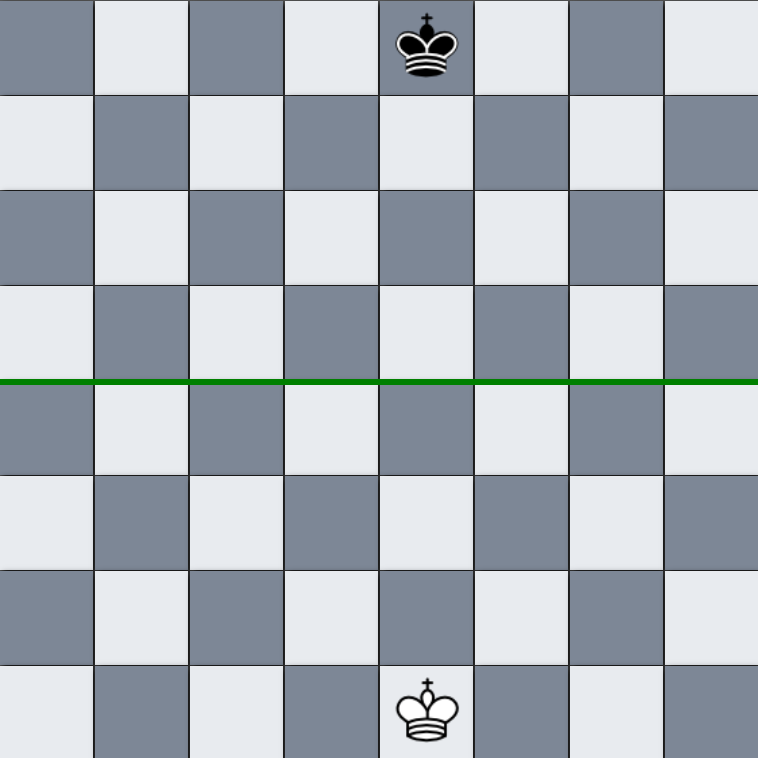
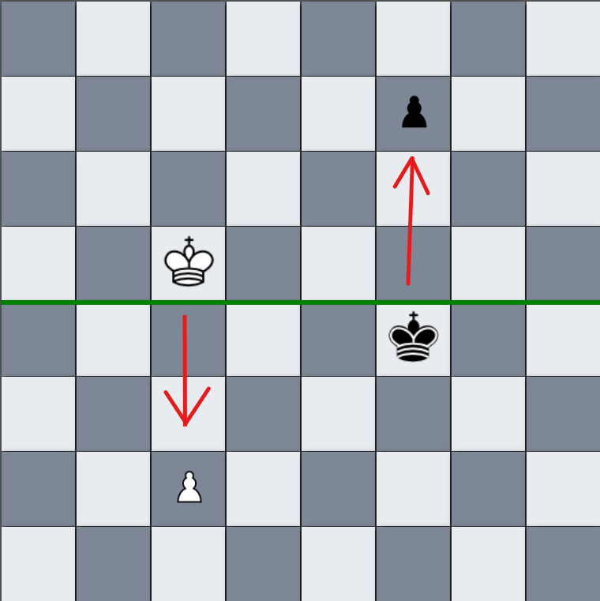
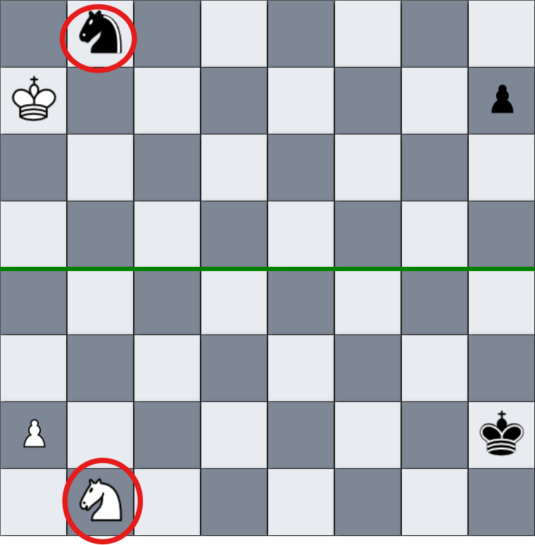
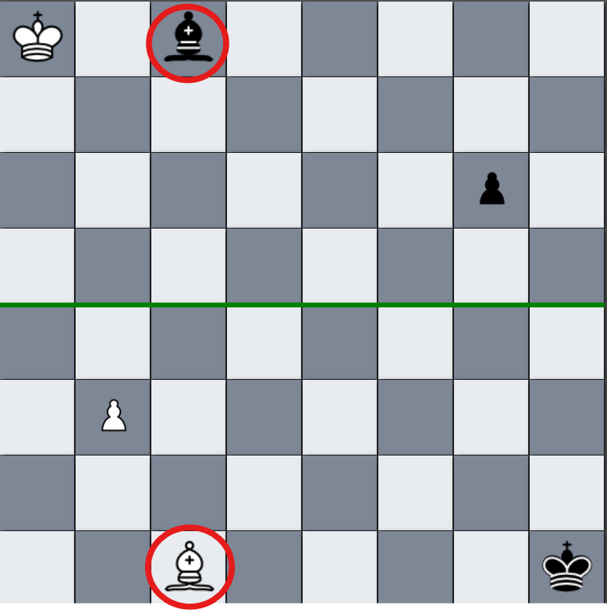
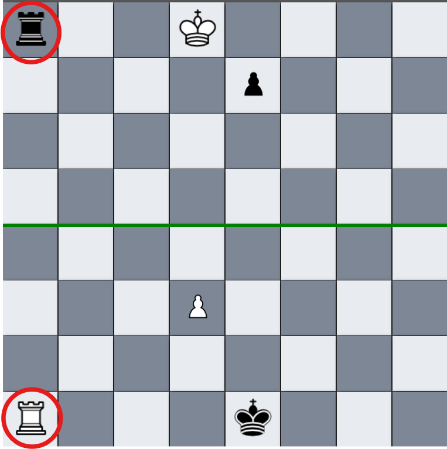
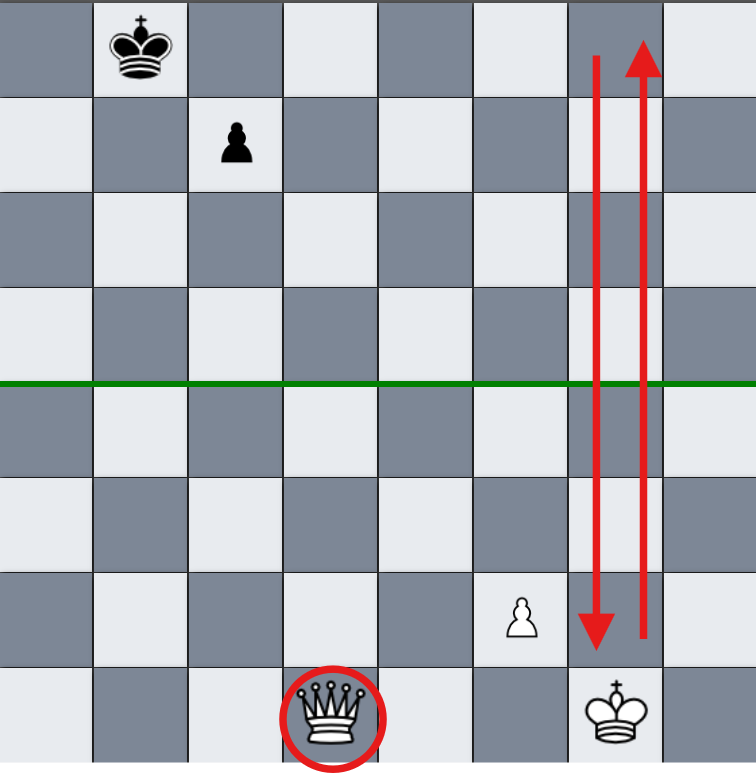

Crazy Chess is different because rather than starting with all your pieces to protect the king, the game starts with only the kings, and the players have to use the kings to build an army of pieces on the playing ground.

Crazy Chess is different because rather than starting with all your pieces to protect the king, the game starts with only the kings, and the players have to use the kings to build an army of pieces on the playing ground.

If the king crosses the line of recruitment (the highlighted line between row 4 and 5) the king gets a pawn in the same column. For example, if the white king goes from e4 to f5, then a pawn is spawned at f2, and vice versa for black.

If the king goes to the h or a column and pawns' row of the opponent's side, they get a knight. For black, it's a2 or h2 and for white a7 or h7.

If the king goes to the h or a column and the furthest row of the opponent's side, they get a bishop in columns c or f. For black, it's a1 or h1 and for white a8 or h8.

If the king goes to the opponent's king or queen position (column d or e), they get a rook in columns a or h.

If the king manages to successfully go to the opponent's side and back to theirs, they get a queen in the d column.
All rules of modern chess apply in Crazy chess, with a few modifications and additions.
A pawn isn't spawned if there is already a pawn in that respective row that hasn't moved.
The spot where pieces have been recruited are “closed”, meaning another piece cannot be spawned from that spot unless said piece has been eliminated.
All the types of pieces have a limit of two pieces on the playing ground except for the king, which is invaluable, and the queen, which is unlimited, which is why in a professional set, there are three queens on each side.
Pawn promotion and castling are strictly prohibited in Crazy Chess.